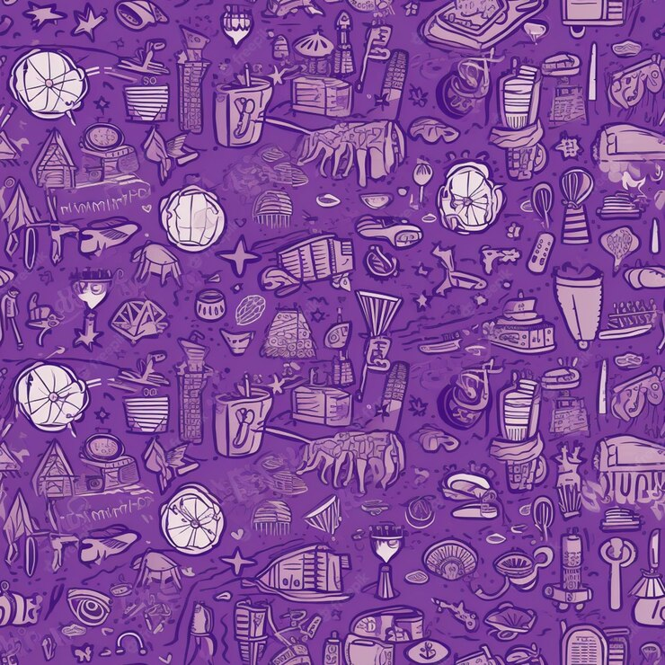
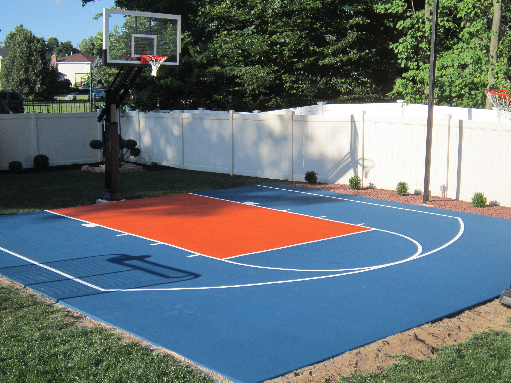

My Favorites
Everything I love
Favorite Color: Purple
Purple has always been my favorite color. It represents creativity, mystery, and a touch of luxury. Why do you think everything on the website is purple?

Favorite Hobby: Basketball
Basketball is more than just a game; it's a passion. I love the calmness of shooting hoops in my backyard with no other worries.

Favorite Audio: Vine Boom Effect